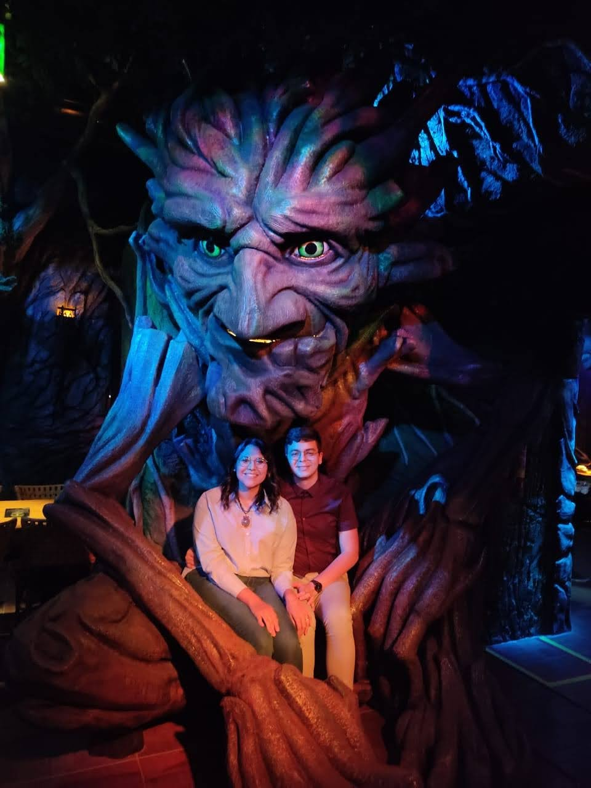
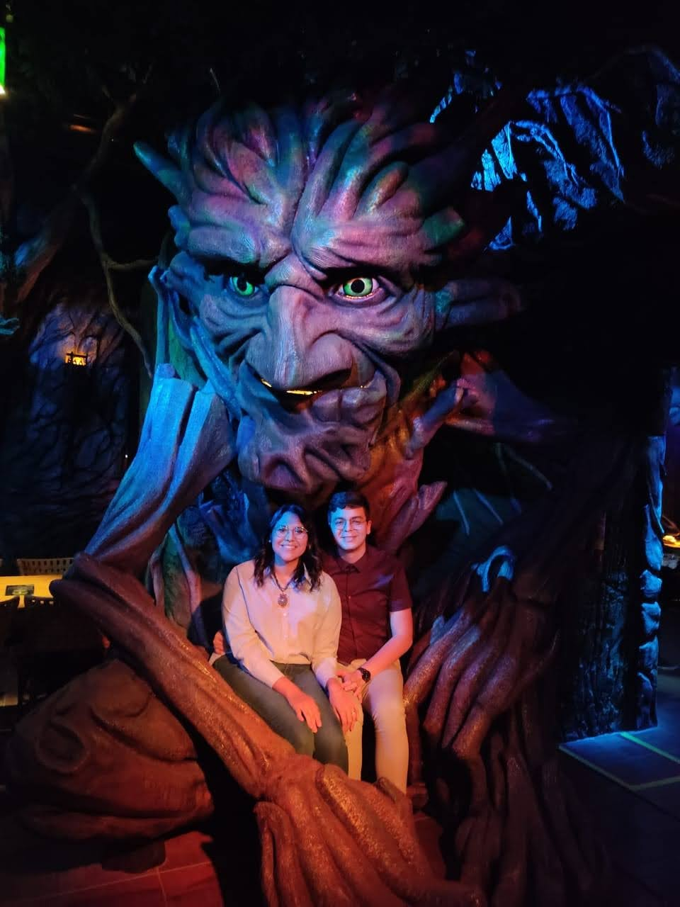

About Me
My journey in technology started as a child, I was always interested in innovative things that could optimize or make my life easier, as a teenager I was sure I wanted to be able to build things and for a moment I thought about being a civil engineer, when I was approved at the Federal University from Ceará, I dedicated myself to knowing and learning more about software development and related areas and the result was a passion for technology and its areas of activity. Today I work as a software developer at a startup that has a web and mobile application for managing working hours, there I dedicate myself to developing automated tests to correct errors before the user uses the system, I am also responsible for correcting small errors in the bank data so that the user has the best experience possible. I believe that technology is a powerful tool that can make people's lives better, from small acts such as facilitating communication to complex surgeries performed by programmed robots. What I like most about being a developer is being able to turn an idea into a reality that will help a person, whether in their business or in their personal life. In my spare time, I like to spend time with my wife. What we like to do most is go out to see new places, and we also
 
